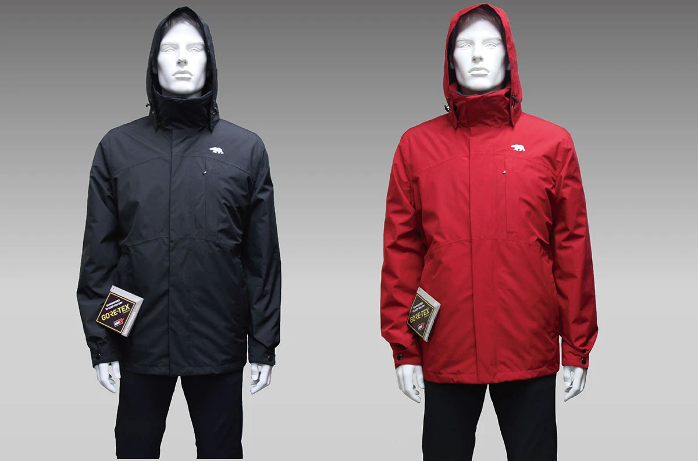
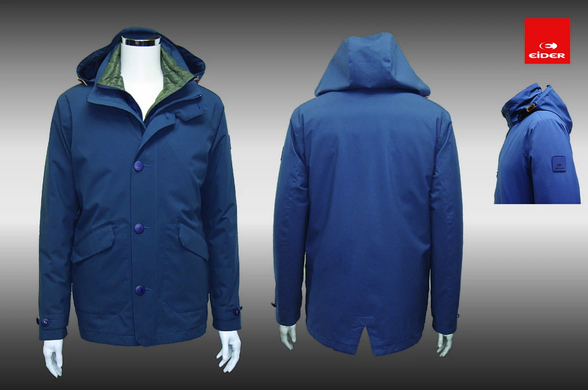

城市通勤
在室內外之間移動，考量外層防護、活動空間與日常搭配。

DESIGNED AROUND YOUR DAY
依移動方式、工作環境與季節，討論合適的面料與穿著配置。
在室內外之間移動，考量外層防護、活動空間與日常搭配。
依工作環境討論防風、防水或透濕需求，選擇對應規格。
由單層風衣到內外層搭配，依溫度變化與穿著習慣規劃。
OUTERWEAR COLLECTION
探索歷年外套款式。實際面料、配色及可製作款式，請於洽詢時確認。

詢問此類款式 ↗STYLE 01
中華電信男女外套歷年展示款。
 詢問此類款式 ↗
詢問此類款式 ↗STYLE 02
俐落長版與連帽配置的款式參考。

詢問此類款式 ↗STYLE 03
兩件式外套與內搭保暖配置參考。
MATERIAL MATTERS
機能名稱只是起點，更重要的是對應你實際需要的穿著條件。選擇時，應一併確認面料、接縫、結構及產品標示。
GORE-TEX 相關品項以實際產品標示與供應資料為準，並非所有機能外套都使用相同面料或具備同一規格。
CARE FOR LONGER WEAR
清洗、烘乾與整燙方式，
請以個別服裝洗標為優先。
先確認服裝洗標，依指示整理口袋、拉鍊及扣具。不同面料與內搭層的清潔方式可能不同，不宜套用單一洗程。
是否適用應依該件服裝的洗標及製造商指示判斷。如無法辨識標示，請先提供產品資訊向我們詢問。
先依該產品照護說明清潔及保養，再確認是否需要適用的後續處理。不要自行使用未確認適用的清潔或防潑水用品。
LET’S MAKE IT YOURS
告訴我們你的需求，一起找到合適的款式與製作方向。